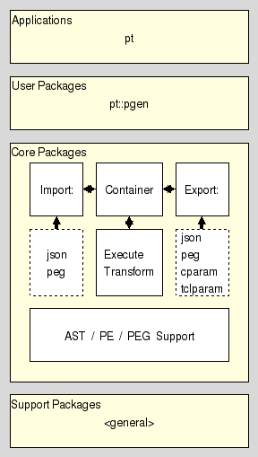

|
ActiveTcl User Guide |
[ Main table Of Contents | Tcllib Table Of Contents | Tcllib Index ]
pt_introduction(n) 1 "Parser Tools"
Name
pt_introduction - Introduction to Parser Tools
Synopsis
- package require Tcl 8.5
Description
Welcome to the Parser Tools, a system for the creation and manipulation of parsers and the grammars driving them.
What are your goals which drove you here ?
-
Do you simply wish to create a parser for some language ?
In that case have a look at our parser generator application, pt, or, for a slightly deeper access, the package underneath it, pt::pgen.
-
Do you wish to know more about the architecture of the system ?
This is described in the section Parser Tools Architecture, below
-
Is your interest in the theoretical background upon which the packages and tools are build ?
Parser Tools Architecture
The system can be split into roughly three layers, as seen in the figure below

These layers are, from high to low:
-
At the top we have the application and the packages using the packages of the layer below to implement common usecases. One example is the aforementioned pt::pgen which provides a parser generator.
The list of packages belonging to this layer can be found in section User Packages
-
In this layer we have the packages which provide the core of the functionality for the whole system. They are, in essence, a set of blocks which can be combined in myriad ways, like Lego (tm). The packages in the previous level are 'just' pre-fabricated combinations to cover the most important use cases.
The list of packages belonging to this layer can be found in section Core Packages
-
Last, but not least is the layer containing support packages providing generic functionality which not necessarily belong into the module.
The list of packages belonging to this layer can be found in section Support Packages
Core Packages
This layer is further split into six sections handling the storage, import, export, transformation, and execution of grammars, plus grammar specific support packages.
- Storage
- Export
- Import
- Transformation
- Execution
- Support
Support Packages
- pt::peg::container::peg
- text::write
- configuration
- paths
- char
Bugs, Ideas, Feedback
This document, and the package it describes, will undoubtedly contain bugs and other problems. Please report such in the category pt of the Tcllib SF Trackers. Please also report any ideas for enhancements you may have for either package and/or documentation.
Keywords
EBNF, LL(k), PEG, TDPL, context-free languages, expression, grammar, matching, parser, parsing expression, parsing expression grammar, push down automaton, recursive descent, state, top-down parsing languages, transducer
Category
Parsing and Grammars
Copyright
Copyright © 2009 Andreas Kupries <andreas_kupries@users.sourceforge.net>